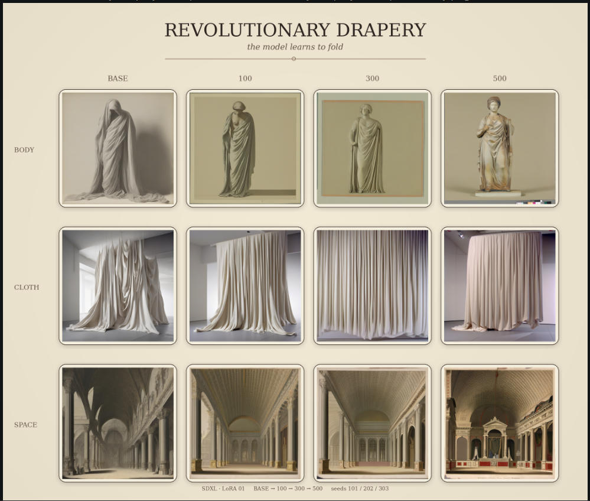

L’esprit n’est vrai que lorsqu’il manifeste sa présence, et dans le mot manifester il y a main.
Denis de Rougemont, Penser avec les mains (1936) cited by Jean-Luc Godard, Histoire(s) du cinéma
CCAI Workshop Preflight Guide
A ComfyUI image-generation workshop for six students begins tomorrow. Five things need attention tonight. This guide walks through the triage, the decisions, and the diagnostic steps.
Triage: what must work by morning
1
Dependency error on custom node
Blocks the entire workflow — fix this first, replicate across all machines
2
VRAM exceeded under current configuration
Blocks LoRA training — scale down for teaching without losing the learning
3
Model licence and data provenance unclear
Must be decided before the session, not during it
4
Students with limited CLI and node-graph experience
The Centre treats licensing, copyright, data provenance, bias, and sustainability as central to its work. This isn't compliance — it's pedagogy. Two real Hugging Face model cards illustrate the difference:
✓ CLEAR-Global / Kanuri TTS
LicenceDocumented
Training data10 hrs, source named
ConsentExplicitly stated
EthicsSection included
LimitationsDocumented
CLEAR-Global/TWB-Voice-Kanuri-TTS-1.0
✗ SatiricalGuru / Trump voice clone
LicenceMIT (code only)
Training dataNot documented
ConsentNone — cloned voice
EthicsNone
LimitationsNot discussed
SatiricalGuru/beatrice-voice-models
Both are downloadable in thirty seconds. The difference is whether you can assess what you're using before you use it.
If the licence or training data is unclear, flag it to the academic — suggest a well-documented alternative
Make the decision visible to students: understanding where a model comes from is part of working with AI critically
Provenance extends to the platform too — the July 2026 Hugging Face breach by an autonomous AI agent shows supply-chain security matters
From provenance to practice: building a training set
20 images of draped fabric from the Metropolitan Museum of Art — all public domain, all with full provenance. This is the training set for the LoRA below.
Source: Metropolitan Museum of Art Open Access. Every image carries full catalogue metadata: date, medium, accession number, rights status.
What a LoRA training run looks like

SDXL + custom LoRA on drapery imagery. Columns: training progression (base → 100 → 300 → 500 steps); rows: three prompt contexts (body, cloth, space) at controlled seeds.
Supporting the academic and students
Before the session
Brief the academic on what changed overnight and any constraints. Check accessibility: is the lab provisioned for students with specific needs — screen magnification, adjustable seating, keyboard navigation, sufficient contrast in the ComfyUI interface? Ask the academic in advance. Prepare a one-page quick-reference. Pre-load the workflow as a saved .json — students load, examine, and modify rather than build from zero. Create a known-good checkpoint they can always reload.
During the session
Be present in the room, not behind a screen. Suggest a guided walkthrough before anyone touches a keyboard. Pair experienced students with less experienced ones. Watch for the moment confusion becomes frustration — that's when to step in, not before.
Lower the threshold of entry without lowering the ceiling of what's possible.
After the workshop
Document the configuration
Exact Python environment, CUDA version, custom node versions, ComfyUI commit hash, model files and checksums. A reproducible setup script or lockfile. A pre-session checklist — a runbook anyone can follow to verify workstations before the next workshop.
Build the library
Log the licensing decision and reasoning. Feed back to the academic: what worked, what to adjust. Start building a library of tested, documented workflows that academics can book with confidence — and a guide for students on continuing with cloud GPU resources after the course.
Workshop preflight diagnostic
Hover or tap each node for the terminal commands, expected outputs, and practical actions.
Preflight check — the evening before
Run the full diagnostic on every machine. Never assume last week's setup still works — model updates, driver patches and custom node changes break things silently.
One golden config → replicate across all 6 machines.
If either fails → driver mismatch or wrong PyTorch build installed.
Launch ComfyUI and test the workflow
cd /opt/ComfyUI && python3 main.py
Starting server on http://127.0.0.1:8188
⚠ Import failed for custom node 'ComfyUI-LoRA-Training'
ModuleNotFoundError: No module named 'bitsandbytes'
pip install bitsandbytes
Successfully installed bitsandbytes-0.43.1
The traceback names the package. Fix it, then load the workshop .json and test end to end.
VRAM check during LoRA training
nvidia-smi
GPU Memory Used: 14,230 MiB / 24,576 MiB ✓
— or —
GPU Memory Used: 23,890 MiB / 24,576 MiB
CUDA out of memory ✗
If >95% or OOM → take the squeeze path.
VRAM squeeze — mitigations
python3 main.py --lowvram
→ Resolution: 1024→512
→ Batch size: 4→1
→ Enable 8-bit quant (bitsandbytes)
→ Kill background GPU processes
nvidia-smi
GPU Memory Used: 11,420 MiB / 24,576 MiB ✓
The learning objective is the workflow — scale down aggressively.
Students explore and experiment
→ Pre-loaded workflow .json
→ Known-good checkpoint to reload
→ Pair experienced with beginners
→ One-page quick-reference handout
Be present. Watch for when confusion becomes frustration.
Cloud GPU — pre-approved fallback
Must be set up in advance:
→ Procurement and budget signed off
→ Data handling / GDPR assessed
→ Environment pre-tested with exact workflow
→ Check institutional agreements (Azure, JADE)
Cloud environment
Pre-built ComfyUI Docker image on rented GPU. Students connect via browser.
RTX 4090 24 GB ≈ £0.25–0.40/hr
3-hour workshop, 6 students < £10 total
Also a lesson: cloud GPU rental means the workshop doesn't stop at the lab door.
Offline fallback — no GPU, no internet
→ Pre-rendered outputs showing each pipeline stage
→ Workflow exercises without running inference
→ Annotated screenshots of the interface
Three levels deep. The students still learn.
Learning continues
Students understand the workflow, node structure, and decision-making — even without live generation. Point them to cloud GPU options for practice after the session.
Document everything → build a library of tested workflows.
Hover or tap each node for practical actions
Penser avec les mains
CCAI Workshop Preflight Guide · Birkbeck Centre for Creative AI